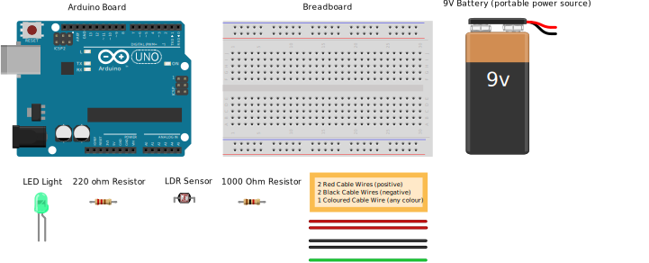
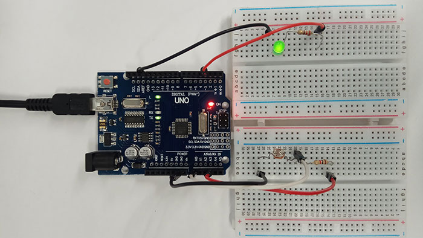
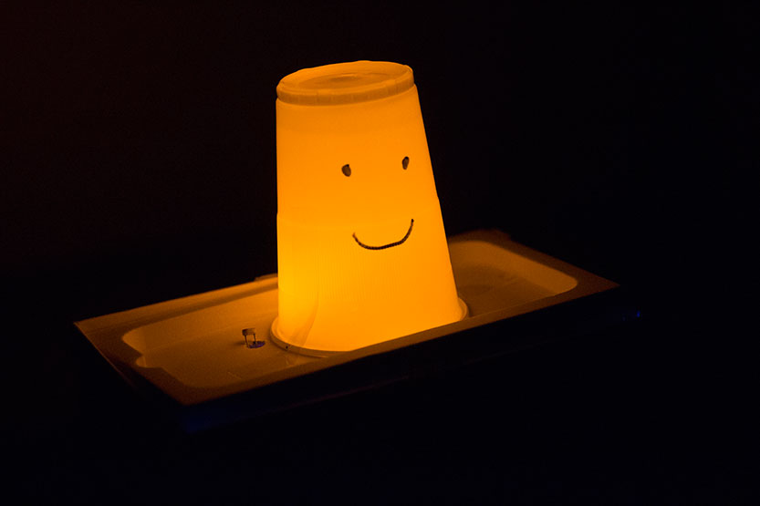

Let there be LIGHT!
Have you ever wondered who turns Dunedin’s street lights off and on?
A computer programme of course!
The computers code tells a circuit board how and when (this is the input) to switch the streetlights on and off (this is the output).Together they make a System!
Light up your world with this cool night light!
See how to make a nightlight.
Click here to startThe electronics looks like this:
After you've finished making it, try putting inside a plastic cup.
Make a nightlight
What do I need?
Make sure you have the Arduino software installed. Click here to learn how.
You need the following items to make you nightlight:
- 1 x Arduino board
- 1 x large breadboard
- 2 x black (negative) cables
- 2 x red (positive) cables
- 1 x cable (TIP: this cable can be any colour apart from red or black)
- 1 x LDR (light dependent resistor)
- 1 x mini-USB cable
- 1 x resistor (220 ohm rating)
- 1 x resistor (400 - 12,000 ohm rating)
- 1 x 9V battery
- 1 x battery power cable
Put all the items inside a box so you don't lose anything. Once you have done that, you are then ready for Stage 1!